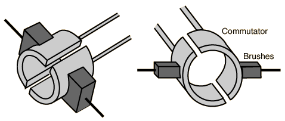

Commutator and Brushes on DC Motor
To keep the torque on a DC motor from reversing every time the coil moves through the plane perpendicular to the magnetic field, a split-ring device called a commutator is used to reverse the current at that point. The electrical contacts to the rotating ring are called "brushes" since copper brush contacts were used in early motors. Modern motors normally use spring-loaded carbon contacts, but the historical name for the contacts has persisted.

|
Index
Magnetic field concepts |